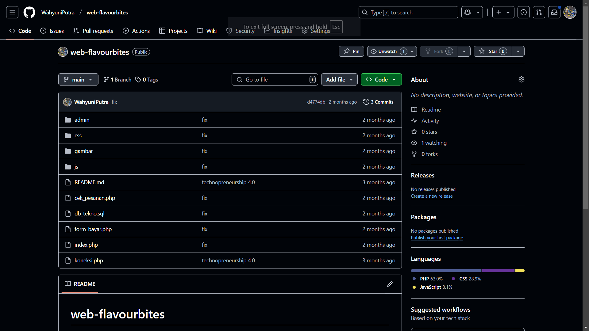

Projects dan Publikasi
Website E-Commerce KambingFresh
KambingFresh adalah sebuah platform marketplace digital yang
berfokus pada produk-produk peternakan kambing. Marketplace ini
menyediakan fitur-fitur yang memungkinkan peternak menjual ternak
kambing, susu, serta daging kambing secara langsung kepada
konsumen, mempersingkat rantai distribusi dan meningkatkan
pendapatan peternak. Platform ini juga menawarkan sistem verifikasi
kualitas produk serta modul edukasi bagi peternak untuk meningkatkan
pemahaman terkait pemasaran digital dan penggunaan platform kepada
pengguna. Solusi ini diintegrasikan dengan sistem pembayaran yang
aman dan pelacakan pesanan, yang didesain untuk memudahkan baik
peternak maupun konsumen dalam bertransaksi. platform ini bertujuan
untuk menciptakan ekosistem jual-beli yang transparan, efisien, dan
terjangkau bagi peternak kecil hingga menengah serta pembeli di
seluruh wilayah Indonesia.
Teknologi : Figma, React, Express, dan Tailwind CSS
Front
End
Exhibition
GitHub
Website Text Recognizer
Website text
recognition atau bisa juga disebut dengan Optical Character Recognition (OCR).
Optical Character Recognition (OCR) adalah sebuah aplikasi komputer yang
digunakan untuk mengidentifikasi citra huruf maupun angka untuk dikonversi ke
dalam bentuk file tulisan (Sonita, 2018). Algoritma Hebb dalam program ini
diimplementasikan pada fungsi updateHebbWeights() dalam skrip JavaScript,
yang digunakan untuk menghitung frekuensi kemunculan kata. Pada program ini proses algoritma
Hebb akan dimulai dengan pemisahan
teks menjadi kata-kata individual menggunakan metode split dengan regular
expression /\s+/ yang akan memecah teks berdasarkan satu atau lebih karakter
whitespace (spasi, tab, atau line break).
Teknologi : HTML, PHP dan JavaScript
GitHub
Website Technopreneurship Flavour Bites!
Website ini dirancang untuk memberikan kemudahan kepada pembeli dalam melakukan transaksi secara
online. Dengan fitur yang lengkap, platform ini mendukung pengalaman pengguna yang intuitif,
mulai dari pencarian produk, keranjang belanja, hingga proses pembayaran. Website ini tidak
hanya praktis, tetapi juga dioptimalkan untuk memberikan solusi terbaik bagi para pelaku bisnis
di era digital.
Teknologi : HTML, CSS, JavaScript, dan Bootstrap
GitHub
Website E-Commerce Ki-Store

Website ini bertujuan untuk mempermudah penjual dalam membuat deskripsi produk secara otomatis
menggunakan teknologi API Gemini AI. Dengan integrasi ini, penjual dapat menghasilkan deskripsi
produk yang menarik dan informatif tanpa harus menghabiskan banyak waktu. Platform ini juga
mendukung kemudahan manajemen produk, sehingga penjual dapat fokus pada pengembangan bisnis.
Teknologi modern yang digunakan memastikan pengalaman pengguna yang cepat, efisien, dan
responsif.
Teknologi : HTML, CSS, API,JavaScript, dan Bootstrap
GitHub
Mobile E-Commerce Ki-Store

Aplikasi mobile ini dirancang untuk mempermudah penjual dalam mengelola produk dan membuat
deskripsi produk secara otomatis menggunakan API Gemini AI. Dengan dukungan teknologi ini,
penjual dapat menghasilkan deskripsi produk yang menarik dan informatif langsung dari perangkat
mobile mereka. Aplikasi ini juga menyediakan fitur-fitur e-commerce yang lengkap, seperti
manajemen inventaris, notifikasi real-time, dan integrasi pembayaran, sehingga memungkinkan
pengalaman pengguna yang praktis, cepat, dan fleksibel di mana saja.
Teknologi : Dart dan API
Publikasi
GitHub
Chatbot Berbasis Whatsapp Teknik Informatika Universitas Palangkaraya: Rules Based System
Chatbot ini dikembangkan untuk mempermudah komunikasi dan memberikan informasi
secara otomatis
kepada mahasiswa dan pengguna lainnya melalui platform WhatsApp. Bot ini menggunakan integrasi
API GPT untuk menghasilkan jawaban berbasis pemrosesan bahasa alami (NLP), teknik web scraping
untuk mengambil data terkini dari website tertentu, dan teknologi OCR (Optical Character
Recognition) untuk membaca dan mengekstrak informasi dari dokumen atau gambar. Dengan kombinasi
teknologi ini, chatbot dapat memberikan respons yang akurat, relevan, dan cepat. Hasilnya adalah
sistem yang efisien untuk mendukung kebutuhan informasi di lingkungan akademik.
Teknologi : Node JS, GPT-3, Web Scraping, dan OCR
Publikasi
GitHub